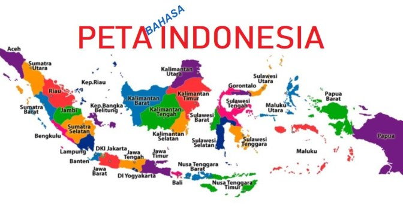

Panduan Menggunakan Gambar dalam HTML
Panduan Menggunakan Gambar dalam HTML
1.Memasang Gambar pada Halaman
2. Format Gambar yang Didukung
- APNG - Animated Portable Network Graphics
- ICO - Microsoft Icon (.ico, .cur)
- JPEG - Untuk foto dan gambar kompleks
- PNG - Untuk transparansi dan kualitas tinggi
- GIF - Untuk animasi sederhana
- SVG - Untuk grafis vektor
3.Mengambil File dari Harddisk
4. menyisipkan gambar pada paragraf
berikut illustrasi yg mendukung penjelasan
 menyisipkan gambar di dalam paragraf sehingga tampilan lebih menarik
menyisipkan gambar di dalam paragraf sehingga tampilan lebih menarik
5.Image Map
